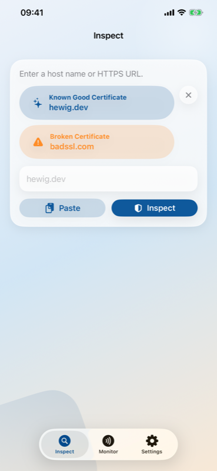
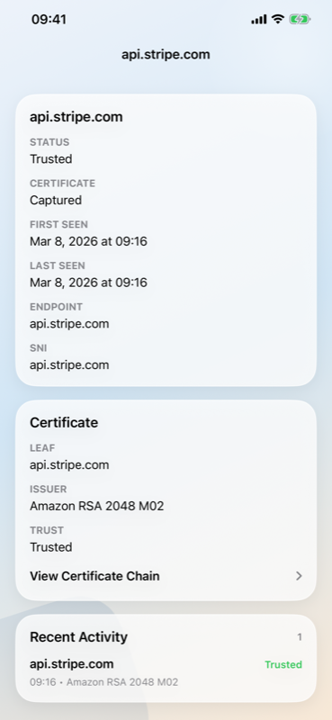
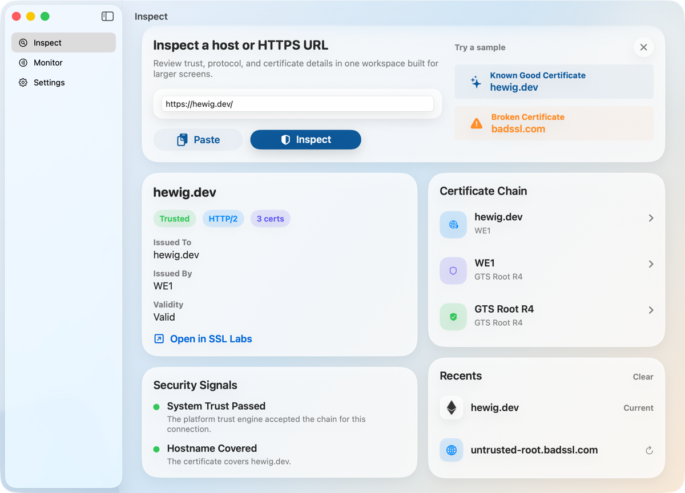

Support
Bug reports, questions, or App Store review follow-up:
iPhone, iPad, and Mac
TLS certificate inspector with passive Live Monitor. See what your device connects to.




New
Passively observe TLS certificates across your device's traffic. Nothing is intercepted or modified — certificates are captured from live handshakes and shown in a scrollable feed.

Bug reports, questions, or App Store review follow-up:
No accounts. No analytics. No tracking. All data stays on your device.
Live Monitor only observes — never intercepts or modifies traffic.
Swift 6, SwiftUI, and Apple's certificate libraries. Live Monitor uses a Rust-based forwarding core with platform-native packet tunnel extensions.